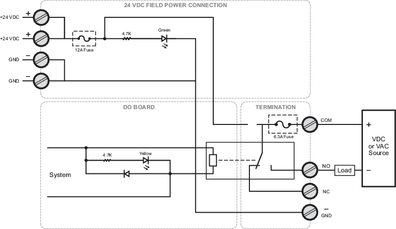
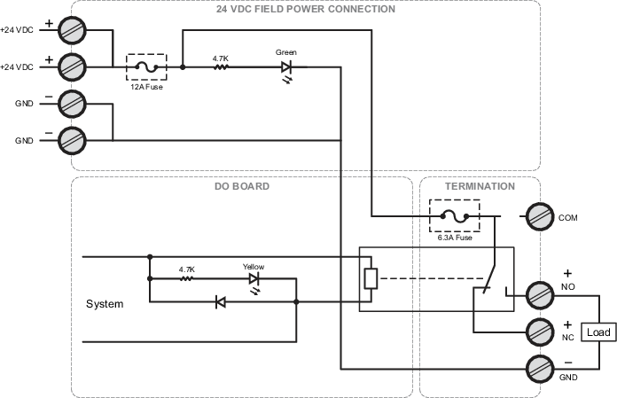

DO Mass Connection Board (single)
Installation notes
- The DO Mass Connection Board (single) provides an interface to the DO, 32-Channel, 24 VDC, High-Side, Series 2 card used with the M-series 40-Pin Mass Termination Block.
- Two DO Mass Connection Boards (single) (DO Mass Connection Solution (two)) are required to provide the interface to all 32 channels on the DO, 32-Channel, 24 VDC, High-Side, Series 2 card.
- Two, 20-pin ribbon cables (one per board) connect between the DO Mass Connection Solution (two) and the 40-pin Mass Termination Blocks.
- Four screw terminals provide the connections for +24 VDC power and ground.
- Two rows of four screw terminals and a fuse for each channel enables either isolated relay contact or +24 VDC high-side output mode. Ensure that the jumpers are set for the correct mode for each output. Refer to the figures for wiring diagrams.
- Channel fuses and relays can be replaced in the field.
Specifications
Wiring for isolated relay mode

Wiring for 24 VDC high side output mode
